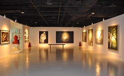

Singapore - ART SEASONS was founded in September 2001 by Terry Lee, an ardent art fan and collector. With its initial mission in mind: to explore and to promote contemporary Chinese and Asian art, Art Seasons has been dedicated to presenting talented Asian artists for more than ten years. Now, as one of the pioneers in the field to represent emerging contemporary Chinese and Asian artists, Art Seasons has gained a reputation as one of the most important galleries in Contemporary Asian art, and especially in contemporary Chinese art.
Placing strong emphasis in showcasing new and interesting work, Art Seasons has come to be associated with only the best of contemporary Asian Art. With a particular interest in the contemporary visual arts of China, it was one of the first galleries in Singapore to promote contemporary Chinese works. It has since carved its niche in this area. Now, the public looks to the gallery to introduce them to the forerunners of the contemporary Chinese art scene.
The discovery, promotion, and support of young Asian artists have always been critical to its success. Many young contemporary artists, for example, Chen Ke, Feng Zhengjie, Zhang Peng, Chi Peng, Jia Aili, David Chan, Wang Fanseng, Zhu Xinyu and PHUNK, who started with Art Seasons, continue to evolve and develop with and with other galleries. Many of these artists have gone on to be recognized by the international art community, auction houses and are cherished by collectors and art institutions.
ART SEASONS Singapore
50 Genting Lane, #03-02
Cideco Industrial Complex
Singapore 349558
Tel: +65 6741 6366
Fax: +65 6741 6369
Email: info@artseasonsgallery.com
Gallery Hours:
Mondays to Fridays 11am – 7pm
Saturdays by appointment only.
Please call +65 977 22144
Closed on Sundays and Public Holidays
{kind=link}